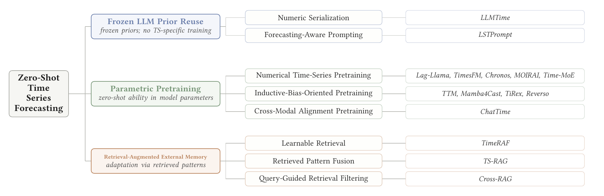
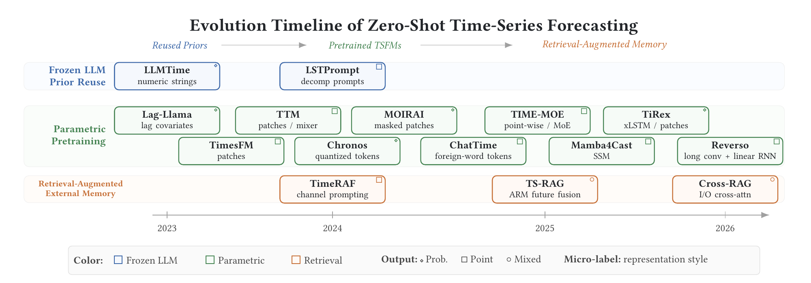

Publications
Also see my Google Scholar profile. * denotes corresponding author.
Browse by year
Accepted · Poster

UHI-Bench: Benchmarking Dual-Source Urban Heat Island Modeling Across Cities in Diverse Climate Regimes
KDD 2027 · Datasets and Benchmarks Track (Poster)
Conference Proceedings


Tracing the Evidence Behind Zero-Shot Time-Series Forecasting: A Source-First Taxonomy and Audit Framework
AI Summit '26: Proceedings of the ACM AI Leadership Summit 2026 · Article 32, pp. 1–5 · November 10, 2026
Accepted · Conference

Towards an Interpretable Urban Heat Island Foundation Model for Forecasting, Attribution, and Climate Adaptation Decision Support
34th ACM SIGSPATIAL International Conference on Advances in Geographic Information Systems, Riverside, California, USA, November 3–6, 2026
Accepted · Conference

Atmosphere-Aware Place Discovery: Semantic Urban Mapping with Multimodal Vibe Enrichment
34th ACM SIGSPATIAL International Conference on Advances in Geographic Information Systems, Riverside, California, USA, November 3–6, 2026
Journal

Adaptive Urban Heat Mitigation Through Ensemble Learning: Socio-Spatial Modeling and Intervention Analysis
Buildings, 15(21), 3820 · October 2025 · IF 3.2, JCR Q2
Conference

Urban Climate Justice through Interpretable Ensemble Learning: Heat Exposure Inequities and Planning Strategies in Metro Vancouver
61st ISOCARP World Planning Congress · Riyadh, Saudi Arabia · December 1–4, 2025
Conference
Urban Futures
Symposium 2025
Symposium 2025
Data-Driven Circularity: Visualizing Urban Heat Inequity for Just Green Transitions – A Case Study in Vancouver
Urban Futures Symposium 2025 · Dübendorf, Switzerland · September 1–2, 2025
Conference
GSCS & ICUI
2025
2025
Ensemble Learning Approaches for Adaptive Urban Heat Mitigation: A Socio-Spatial Analysis
Global Smart Cities Summit & 4th International Conference on Urban Informatics (GSCS & ICUI 2025) · Hong Kong · August 5–8, 2025
Book Chapter
Städtebau
Workflow 2024
Workflow 2024
Flut der Zeit: Aufbau einer lebendigen Nachbarschaft für verschiedene Altersgruppen
Städtebau Workflow: Kupferstadt Stolberg · RWTH Aachen University · pp. 36–39 · 2024